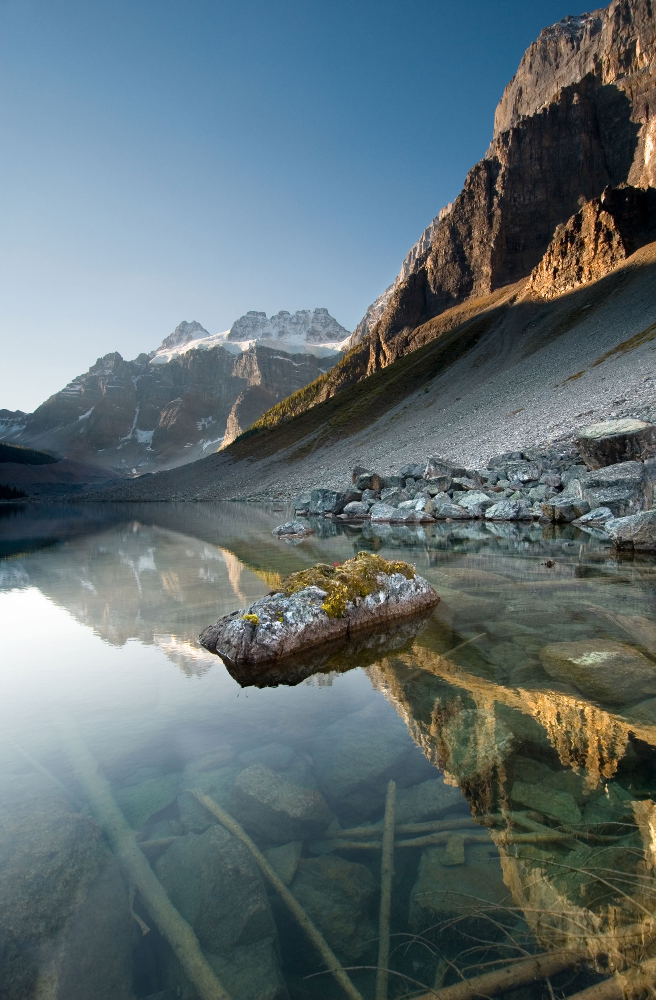

The Canadian Rockies consist of several northwest-southeast trending ranges. Two main mountain ranges are within the park, each consisting of numerous subranges. The western border of the park follows the crest of the Main Ranges (also known as the Park Ranges), which is also the continental divide. The Main Ranges in Banff National Park include from north to south, the Waputik, Bow and Blue Ranges. The high peaks west of Lake Louise are part of the Bow Range. The eastern border of the park includes all of the Front Ranges consisting of from north to south, the Palliser, Sawback and Sundance Ranges. The Banff townsite is located in the Front Ranges. Just outside of the park to the east lie the foothills that extend from Canmore at the eastern entrance of the park eastward into the Great Plains. Well west of the park, the Western Ranges of the Rockies pass through Yoho and Kootenay National Parks. Though the tallest peak entirely within the park is Mount Forbes at 3,612 metres (11,850 ft), Mount Assiniboine on the Banff-Mount Assiniboine Provincial Park border is slightly higher at 3,618 m (11,870 ft).
The Canadian Rockies are composed of sedimentary rock, including shale, sandstone, dolomite and limestone. The vast majority of geologic formations in Banff range in age from Precambrian to the Jurassic periods (600–145 m.y.a.). However, rocks as young as the lower Cretaceous (145–66 m.y.a.) can be found near the east entrance and on Cascade Mountain above the Banff townsite. These sedimentary rocks were laid down in shallow seas between 600 and 175 m.y.a. and were pushed east and over top younger rocks during the Laramide orogeny. Mountain building in Banff National Park ended approximately 55 m.y.a.
The Canadian Rockies may have towered up to 8,000 metres (26,000 ft) approximately 70 m.y.a. Once mountain formation ceased, erosion from water and greatly augmented later from glacier ice beginning with the Quaternary glaciation 2.5 m.y.a. carved the mountains into their present shapes. Glacial landforms dominate Banff's geomorphology, with examples of all classic glacial forms, including cirques, arêtes, hanging valleys, moraines, and U-shaped valleys. The pre-existing structure left over from mountain-building strongly guided glacial erosion: mountains in Banff include complex, irregular, anticlinal, synclinal, castellate, dogtooth, and sawback mountains. Many of the mountain ranges trend northwest to southeast, with sedimentary layering dipping down to the west at 40–60 degrees. This leads to dip slope landforms, with generally steeper east and north faces, and trellis drainage, where rivers and old glacial valleys followed the weaker layers in the rocks as they were relatively easily weathered and eroded.
Classic examples are found at the Banff townsite proper: Mount Rundle is a classic dip slope mountain. Just to the north of the Banff townsite, Castle Mountain is composed of numerous Cambrian age rock formations. The uppermost section of the peak consists of relatively harder dolomite from the Eldon Formation. Below that lies the less dense shales of the Stephen Formation and the lowest exposed cliffs are limestones of the Cathedral Formation. Dogtooth mountains, such as Mount Louis, exhibit sharp, jagged slopes. The Sawback Range, which consists of nearly vertical dipping sedimentary layers, has been eroded by cross gullies. The erosion of these almost vertical layers of rock strata in the Sawback Range has resulted in formations that appear like the teeth on a saw blade. Erosion and deposition of higher elevation rock layers has resulted in scree deposits at the lowest elevations of many of the mountains.